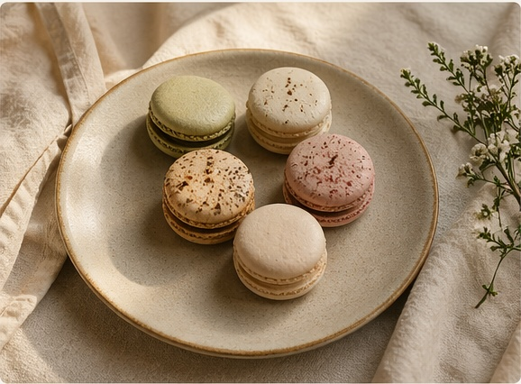

follow the story
handmade macarons
field notes bakery
Small-batch, seasonal macarons rooted in care, texture, and place. Made with eggs from our chickens and ingredients we prepare ourselves.

This is not a high-volume bakery.
It’s a slow, evolving kitchen practice — micro-batches, seasonal notes,
and careful ingredients.
More like field notes than a menu.

current field notes
note no. 3 — pistachio
silky, candied, nutty finish
silky, candied, nutty finish
berry & citrus
soft and sweet, then tart and fragrant
soft and sweet, then tart and fragrant
earl grey honey
floral, rounded, quietly warm
floral, rounded, quietly warm
ingredient notes
eggs from our flock
freeze-dried fruit and herbs
small-batch buttercreams
no artificial colors or flavors

how it works
1. small batches are released every two weeks
2. claim a box via email or instagram
3. local pickup in martinsville, nj
Made slowly, released in notes, and meant to feel personal.
order a box
For now, orders are limited and released in small batches.
You can place a request below, or reach out directly if you have a special
event, flavor question, or pickup request.